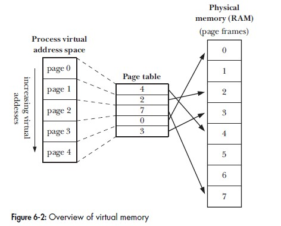
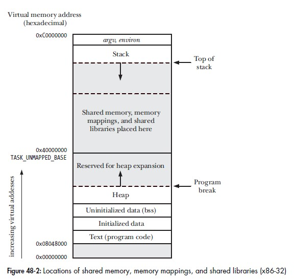
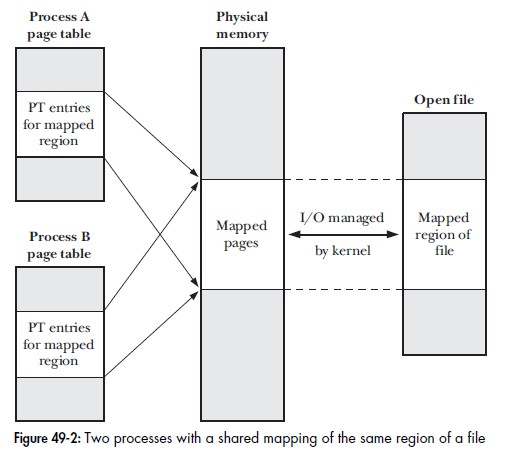

Week 11 - March 27-31
Introduction
This week we are going to look at memory mapping. We will look at process memory some more, and we will look at virtual memory.
We will look at the various memory mapping schemes across processes.
Videos
Quiz
- Quiz 9 will be on memory mapping. Study chapter 49 of
The Linux Programming Interface
Lecture Material
Labs
Assignment
Assignment 2 (due April 14).
Additional Lecture Material
An overview of virtual memory can be seen at:

Locations of shared memory, memory mappings, and shared libraries can be seen below:

Two processes with a shared mapping of the same region of a file can be seen at:

Sample Code
Banking Application
- A banking application, several of which can be run in parallel, for updating a bank account can be found at:
BankApplication.h,
BankApplication.cpp and
Makefile.
The common file that is mapped to all banking application processes can be found at
BankDatabase.txt. Note that this is a binary file.
- Code that demonstrates mprotect can be found at:
BankDatabase.txt,
BankApplication.h,
BankApplication.cpp and
Makefile.
- Code that demonstrates
mlockall,
mincore and
madvise
can be found at:
BankDatabase.txt,
BankApplication.h,
BankApplication.cpp and
Makefile.
- Code that demonstrates anonymous mapping via /dev/zero can be found at:
BankApplication.h,
BankApplication.cpp and
Makefile.
Note that there is no database file.
- Code that demonstrates anonymous mapping without any files whatsoever can be found at:
BankApplication.h,
BankApplication.cpp and
Makefile.
Note that there is no database file.
Transaction Applications